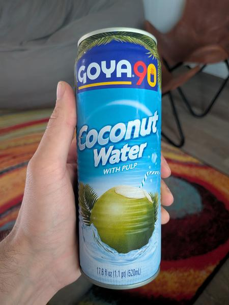

September 2026 · 17.6 fl oz (520 mL) · Still · Thailand · Pasteurized · Added Sugar · Pulp · Not Organic
Ranked 25th of 35 coconut waters I have scored · below Blue Monkey Organic (4.4) · above C2O w/ Pulp (4.2). See the full ranking.
While some of Goya's coconut waters have a 'non-GMO' badge on them, this one doesn't. My guess is because it uses added sugar from GMO sugarcane. There is so much added sugar: 12g per 8oz.
Also, side note: orange juice has pulp naturally. Coconut water with pulp just means coconut water with added bits of coconut meat. Which is fine, but it makes it more processed than standard. One more ingredient. This is a Thai coconut water with added citric acid and potassium metabisulfite.
Covers its bland flavor with way too much sweetness. Makes sense from one of the largest global food conglomerates. Slightly burnt but very palatable despite the fact. Hard to make a beverage this sugary taste bad. The pulp is solid. Nice density and crunch factor.
See my other 2 Goya reviews: all Goya coconut water.
These coconuts are grown in habitats threatened by palm oil deforestation. If you find this site useful, consider donating to the Rainforest Action Network.